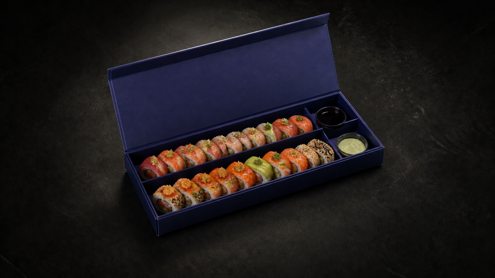

Caja y producto físicos
Autoridad final para geometría, acabado, color, logo, piezas, toppings y comportamiento.
RYŌ · Capture specification 01
Guía de reunión y captura para fijar al 100% caja, wordmark, interiores, un roll especial y nigiris antes de producir los videos.
La sesión genera fuentes maestras. Los conceptos actuales solo definen composición, luz y movimiento.

Corrección aceptada
Invariante: el wordmark RYŌ aparece en el exterior y en el interior de la caja. Debe conservar forma, color, escala, orientación, material y distancia a los bordes.
No se generará como texto por IA. Para foto y video final se usará el objeto real; para composiciones se usará el archivo oficial de marca con tracking y perspectiva medidos.
Jerarquía de verdad
Autoridad final para geometría, acabado, color, logo, piezas, toppings y comportamiento.
Logo vectorial, artes del empaque, receta aprobada y fotografías originales.
Autoridad actual para nombre, descripción, cantidad, precio y apariencia visible de rolls especiales y nigiris.
Apoyo para contexto de uso y construcción; no reemplazan una captura limpia.
Solo dirección de luz, cámara, encuadre y movimiento. Nunca corrigen al producto real.
Referencia actual


Logo lock
Solicitar SVG, PDF o AI oficial del wordmark.
Foto perpendicular de la tapa exterior completa.
Foto perpendicular del logo interior con tapa abierta.
Ancho, alto y distancia exacta a cada borde.
Confirmar impresión, foil, relieve, brillo y color real.
Registrar giro y sentido de lectura exterior/interior.
Shot list · Caja
| Hecho | Código | Captura | Debe mostrar | Uso |
|---|---|---|---|---|
| BOX-01 | Cerrada, cenital perpendicular | Tapa completa, logo exterior y cuatro bordes | Arte y medidas | |
| BOX-02 | Cerrada, 45° superior | Frente, lateral, espesor y sombra | Hero K00 | |
| BOX-03 | Cerrada, perfil lateral | Altura, unión tapa/base y pliegues | Modelo geométrico | |
| BOX-04 | Abierta vacía, cenital | Logo interior, bandeja, divisiones y huecos | Plano de interior | |
| BOX-05 | Abierta vacía, 45° superior | Ángulo real de tapa y profundidad de bandeja | Master K02 | |
| BOX-06 | Bisagra y pliegue, macro | Material, radio y límite de apertura | Animación | |
| BOX-07 | Interior cargado, cenital | Orden real, cantidad y orientación de piezas | Continuidad | |
| BOX-08 | Interior cargado, 45° superior | Rolls, salsas, separadores y logo interior | Hero abierto | |
| BOX-09 | Salsas y recipientes, macro | Número, diámetro, tapa y ubicación exacta | Inventario de objetos | |
| BOX-10 | Color con tarjeta gris | Caja, logo y mesa bajo luz neutra | Calibración | |
| BOX-11 | Escala con regla | Largo, ancho, alto, bandeja y divisores | Modelo exacto | |
| BOX-12 | 360° lento | Todos los lados sin manos ocultando bordes | Reconstrucción |
Producto · Rolls especiales
Uramaki relleno de camarón crujiente, aguacate y cilantro, con topping de tuna, slice de limón y masago, bañado en salsa de anguila.
10 pcs · 11 REF · página 10.
Uramaki relleno de cangrejo, tuna y cebollín, con topping de spicy tuna y cebolla frita, bañado en salsa de anguila.
10 pcs · 11 REF · página 10.
Uramaki relleno de tuna, mango, cebollín frito, con topping de pescado blanco y masago, bañado en salsa ponzu con un toque de limón.
10 pcs · 11 REF · página 11.
Uramaki relleno de camarón, aguacate y pepino, con topping de tuna y masago, bañado en salsa de anguila y spicy mayo.
10 pcs · 10 REF · página 12.
Resumen visual basado en el menú consultado el 26.08.2026. Antes de publicar, transcribir literalmente y confirmar vigencia.
Shot list · Rolls de anatomía
Plato o caja con la cantidad real de piezas, orden y toppings tal como se vende.
Una pieza perpendicular a cámara; foco en toda la sección y fondo neutro.
Lado completo para altura, wrapper, topping, salsa y volumen real.
Corona y distribución de salsa sin perspectiva deformante.
Pieza sostenida en el endpoint previsto; mano fuera de cuadro si es posible.
Vista espejo para responsive y composición alternativa.
Textura real de pescado, aguacate, crujiente y salsas.
Ingredientes preparados y separados, solo si el equipo confirma que corresponden al plato.
Nigiris
La referencia vigente muestra tres tipos: tuna, salmón flameado y pesca blanca. La sesión debe reproducir exactamente arroz, corte, topping, salsa, cantidad y plato real.
Atún importado, decorado con cebolla crujiente y nuestra exclusiva salsa Ryo. · 2 pcs · 5 REF · página 5.
Salmón flameado servido con spicy mayo. · 2 pcs · 5 REF · página 5.
Pescado blanco, decorado con slice de limón y salsa ponzu. · 2 pcs · 5 REF · página 5.
Video test
5 s inmóvil desde el ángulo hero. Logo exterior legible.
Dos tomas completas a velocidad real; manos no cubren logo ni bisagra.
5 s inmóvil con interior, logo, bandeja y producto completos.
Tres repeticiones limpias; termina exactamente en la pose frontal de K12.
Sei, Koga, Yuzu y Playboy ocupan el mismo centro, escala, giro y agarre para los cambios de imagen.
Playboy regresa a la caja y la tapa cierra sin cambiar cámara; el logo exterior termina legible.
Mediciones
Inventario de objetos
| Hecho | Objeto | Confirmar | Estado actual |
|---|---|---|---|
| Caja exterior | Color, material, pliegues, logo y dimensiones | Referencia pública parcial | |
| Tapa interior | Logo, color, posición y acabado | Existencia confirmada por Victor; medidas pendientes | |
| Bandeja y divisores | Número, posición, profundidad y material | Doble línea conceptual; verificar físico | |
| Salsas y recipientes | Tipos, cantidad, tapas y ubicación | Visibles en reel; inventario pendiente | |
| Rolls de anatomía | Receta, piezas, presentación y foto oficial | Sei, Koga, Yuzu y Playboy seleccionados; recortes archivados | |
| Nigiris | Tres tipos, cantidad, toppings y plato | Menú confirmado; masters pendientes | |
| Palillos | Color, material, sección y longitud | Bambú natural en referencias y masters; objeto real pendiente | |
| Mesa | Acabado mate, textura y reflectancia | Prop de producción, no objeto RYŌ |
Entrega de la sesión
RAW o ProRAW + JPEG, resolución original, una tarjeta gris, regla y trípode. Guardar originales sin editar.
BOX-01_closed-top_001.dngROLL-02_fuji-front_001.dngVID-04_fuji-lift_take-01.mov
01-box/, 02-logo/, 03-roll/, 04-nigiri/, 05-video/, 06-brand-files/.